Code
import pandas as pd
from dpdisparity import analysis as A, plots, runner
SOURCE = "rerun" # Folktables has no dp-testing runs: this loads this repo's results (and trains any that are missing)Do the patterns we saw on Adult hold on 195,000 Californians, and does more data make privacy’s cost fairer?
Our MNIST and Adult runs showed three patterns:
Adult is small (about 29,000 people) and from 1994. Do these patterns hold on larger, modern data, and how do they change as the training set grows? Esipova et al. did not run Folktables, so this is an extension, not a reproduction. Our comparison points are our Adult results and Mangold et al. (2023), who prove that privacy’s effect on fairness shrinks with more data, for output perturbation rather than DP-SGD.
Why it matters: the US Census Bureau now uses DP to protect the 2020 Census. That is for publishing statistics, not DP-SGD, but it protects the same people as this data. If a privately trained model on such data targeted loans or job ads, a privacy-cost gap would mean one group’s errors rise more, even though every record had the same guarantee. A higher false-negative rate means more of that group’s qualified people are passed over.
get_noise_multiplier. σ ranges from 1.71 at 5k to 0.70 on all of California. A fixed σ would give a smaller ε on more data, making sizes incomparable. Global-Adapt uses the same σ; its private count adds a little ε.Choices where the plan left room (closest to Adult):
education_num.| epochs | lr | batch_size | σ | C | Z₀ | τ | σ₂ | η_Z | δ | target ε | |
|---|---|---|---|---|---|---|---|---|---|---|---|
| Non-private | 20 | 0.01 | 256 | 1e-06 | |||||||
| DP-SGD | 20 | 0.01 | 256 | solved | 0.5 | 1e-06 | 3.41 | ||||
| Global-Adapt | 20 | 0.2 | 256 | solved | 0.5 | 50.0 | 1.0 | 10.0 | 0.1 | 1e-06 | 3.41 |
bal = runner.load("folktables_sex", SOURCE, balance=True) # F1: sexes balanced, as on Adult
nat = runner.load("folktables_sex", SOURCE) # F1: natural sex ratio (also the largest n in F2)
race = runner.load("folktables_race", SOURCE) # F3: white vs Black, natural ratio
NS = [5_000, 10_000, 25_000, 50_000, 100_000]
sweep = {n: runner.load("folktables_sex", SOURCE, n_train=n) for n in NS} | {sum(nat[0]["train_counts"]): nat}
adult = runner.load("adult", "legacy") # our Adult runs, as reported on the Adult page
SEXES, RACES = ["Male", "Female"], ["White", "Black"]
df_bal, df_nat, df_race = A.to_frame(bal), A.to_frame(nat), A.to_frame(race)
acc_bal = A.summarize(df_bal, "accuracy")Without privacy, accuracy is about 81% for men and 82% for women, against 81% and 92% on Adult, where “≤ $50K” was almost always right for women. Men are only about 1.5 points harder here, against 11.6 on Adult.
| share positive | constant accuracy | non-private accuracy | ||
|---|---|---|---|---|
| Adult (balanced) | Male | 31.5 | 68.5 | 80.6 |
| Female | 11.6 | 88.4 | 92.2 | |
| CA balanced | Male | 46.7 | 53.3 | 80.9 |
| Female | 34.7 | 65.3 | 82.4 | |
| CA natural ratio | Male | 46.4 | 53.6 | 81.1 |
| Female | 35.1 | 64.9 | 82.5 |
On all of California (balanced, σ ≈ 0.70), DP-SGD costs both sexes about the same, a little under 4 points each.
The privacy cost is π_k = A_k(non-private) − A_k(private), paired by seed. The disparity measure is the privacy-cost gap |π_Male − π_Female|.
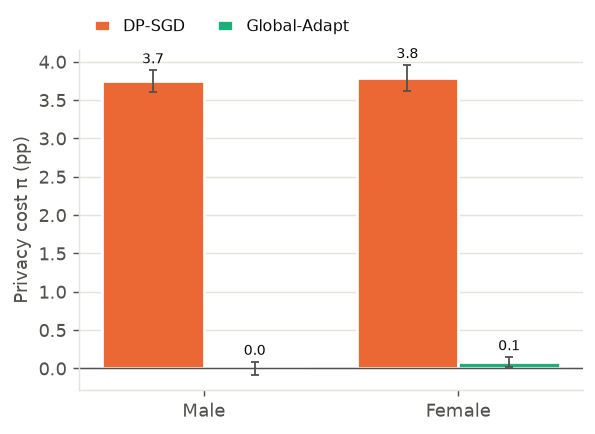
At this size DP-SGD does not fall back to “always ≤ $50K”. Its false-negative rate stays far from 100. But the rise is uneven: DP-SGD misses about 7 more high-earning women per 100 than the non-private model (34 vs 27), and about 3 more men (22 vs 20). Against the stronger lr-0.2 baseline, the figures are about 11 and 4. The accuracy cost is equal, but the extra missed high earners fall more on women.
Global-Adapt scales every gradient by the same factor C/Z instead of clipping large ones separately, and learns Z privately. It uses no group labels.
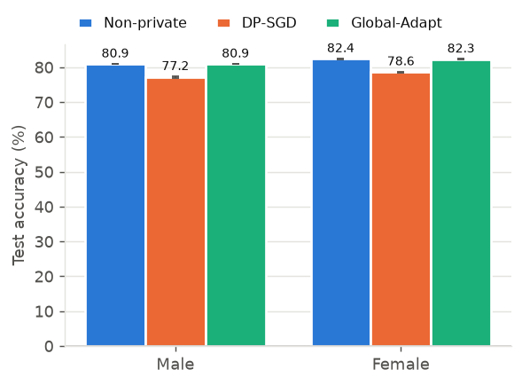
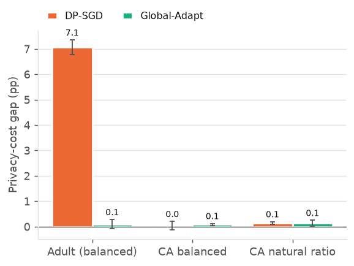
Global-Adapt brings both sexes back to within about 0.1 points of the non-private accuracy, and their false-negative rates to within about 1.5 points. Against a non-private model at Global-Adapt’s own lr 0.2, it falls about 0.5–0.8 points short on all of California (natural ratio; see the baseline check).
There is no gap left to reduce: DP-SGD’s gap is already 0.05 ± 0.16 (balanced) and 0.14 ± 0.06 (natural), and Global-Adapt’s is 0.08 ± 0.05 and 0.13 ± 0.12. On Adult it shrank 7 points to 0.1. As on Adult, Global-Adapt uses lr 0.2 against DP-SGD’s 0.01.
With no published Folktables target, we compare with our Adult runs (the dp-testing runs on the Adult page). ε is about 3.41 throughout, so gap sizes are comparable, unlike between MNIST and Adult.
| Adult (balanced) | CA balanced | CA natural ratio | |
|---|---|---|---|
| Non-private: Acc Male | 80.57 | 80.94 | 81.09 |
| Non-private: Acc Female | 92.18 | 82.43 | 82.47 |
| DP-SGD: Acc Male | 69.86 | 77.20 | 77.29 |
| DP-SGD: Acc Female | 88.54 | 78.64 | 78.53 |
| Global-Adapt: Acc Male | 80.57 | 80.94 | 81.09 |
| Global-Adapt: Acc Female | 92.29 | 82.35 | 82.34 |
| DP-SGD: gap | 7.07 | 0.05 | 0.14 |
| Global-Adapt: gap | 0.10 | 0.08 | 0.13 |
| DP-SGD: ε | 3.41 | 3.40 | 3.41 |
| Global-Adapt: ε | 3.42 | 3.41 | 3.41 |
Adult’s result does not carry over to all of California: the gap is 7 points there and about 0.1 here, at the same ε. California has about 6× more training data and barely-harder men; the size sweep separates the two.
The centrepiece: only the training-set size changes. 25k is about Adult’s training size.
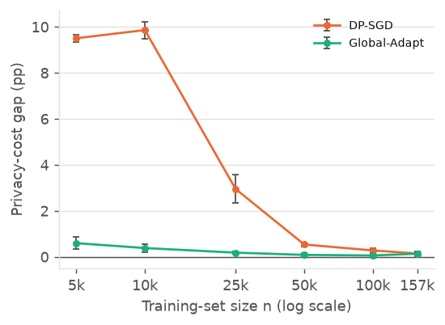
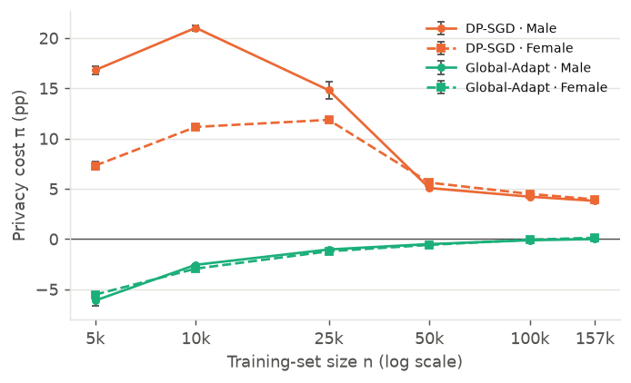
info_n = pd.concat({n: A.run_info(r) for n, r in sweep.items()}, names=["n_train", "method"])
gap_n = sw["gap"].assign(method=sw["gap"].method.map(A.METHOD_LABELS)).set_index(["n_train", "method"])
out = gap_n[["mean", "se"]].round(2).join(info_n[["sigma", "epsilon"]])
out.rename(columns={"mean": "gap", "se": "SE", "sigma": "σ (solved)", "epsilon": "ε (achieved)"}).rename_axis(["n", "Method"])| gap | SE | σ (solved) | ε (achieved) | ||
|---|---|---|---|---|---|
| n | Method | ||||
| 5000 | DP-SGD | 9.50 | 0.16 | 1.714 | 3.408 |
| Global-Adapt | 0.59 | 0.27 | 1.714 | 3.446 | |
| 10000 | DP-SGD | 9.86 | 0.37 | 1.309 | 3.407 |
| Global-Adapt | 0.38 | 0.17 | 1.309 | 3.426 | |
| 25000 | DP-SGD | 2.95 | 0.62 | 0.983 | 3.409 |
| Global-Adapt | 0.18 | 0.07 | 0.983 | 3.416 | |
| 50000 | DP-SGD | 0.54 | 0.09 | 0.837 | 3.404 |
| Global-Adapt | 0.08 | 0.07 | 0.837 | 3.407 | |
| 100000 | DP-SGD | 0.28 | 0.10 | 0.742 | 3.405 |
| Global-Adapt | 0.06 | 0.07 | 0.742 | 3.406 | |
| 156532 | DP-SGD | 0.14 | 0.06 | 0.696 | 3.407 |
| Global-Adapt | 0.13 | 0.12 | 0.696 | 3.408 |
DP-SGD’s gap shrinks sharply with n, as a threshold rather than a smooth decline. It is about 10 points up to 10k, falls about 20-fold by 50k, and stays under 1 beyond that.
That fits Mangold et al.’s result that the gap shrinks with n, a bound for a different method. The shape, though, follows when DP-SGD stops falling back to the constant answer (next section), not a gradual √p/n decay.
Size and training length move together. At 20 epochs, n = 5k gets 400 steps and all of California 12,240. DP-SGD’s cost here is almost all clipping (ε sweep below), and small clipped steps need many steps. So part of the decline may be “more steps”, not “more data”.
Black Californians are the smaller group (about 6,900 in training) and the harder one (about 2 points lower non-private accuracy). On MNIST, where the hard group was rare, Global-Adapt only partly closed the gap. How much does it recover here?
| train | test | share > $50K (%) | |
|---|---|---|---|
| White | 96791 | 24215 | 44.2 |
| Black | 6860 | 1697 | 34.5 |
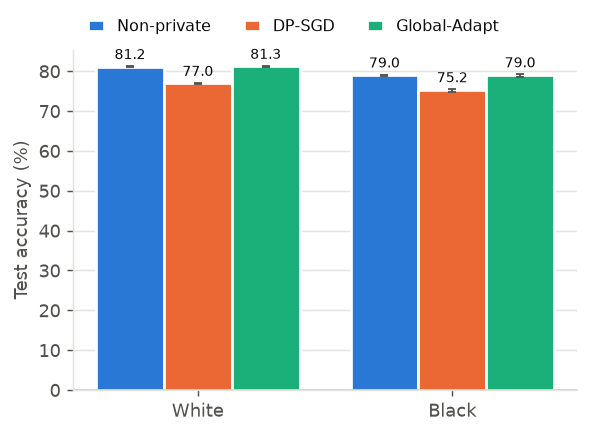
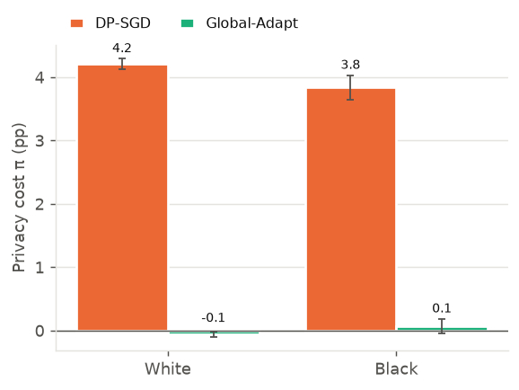
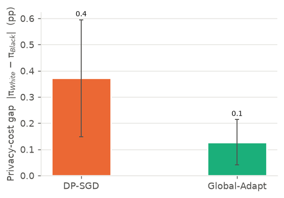
At full size both groups pay about the same: about 4.2 points for white and 3.8 for Black Californians. The gap is 0.4 ± 0.2 (0.5 ± 0.2 against the lr-0.2 baseline), and in each case one seed in five has the opposite sign. Global-Adapt brings both groups back to the lr-0.01 non-private accuracy (gap 0.1 ± 0.1). Against the lr-0.2 baseline, both groups are about 0.9 points short.
So there is no meaningful gap to recover at this size, and the open question stays open. The test set has only about 1,700 Black Californians, so a few tenths of a point is within noise.
The error type does shift. Under DP-SGD:
This is consistent with DP-SGD learning less group-specific signal for a small group (our observation).
On Adult (ours, not published), DP-SGD’s accuracy was close to always predicting “≤ $50K”. Each group’s π was close to its headroom, meaning how far its non-private model sat above that constant. If that holds, the gap is just the difference in headroom. Here the fallback is costlier, because the base rates are higher.
| share positive | constant accuracy | non-private accuracy | headroom | DP-SGD accuracy | DP-SGD FNR | DP-SGD π | ||
|---|---|---|---|---|---|---|---|---|
| Adult (balanced) | Male | 31.5 | 68.5 | 80.6 | 12.1 | 69.9 | 94.9 | 10.7 |
| Female | 11.6 | 88.4 | 92.2 | 3.8 | 88.5 | 98.4 | 3.6 | |
| CA n = 5,000 | Male | 46.4 | 53.6 | 70.5 | 16.9 | 53.7 | 99.6 | 16.8 |
| Female | 35.1 | 64.9 | 72.2 | 7.3 | 64.9 | 99.8 | 7.3 | |
| CA n = 10,000 | Male | 46.4 | 53.6 | 75.2 | 21.6 | 54.2 | 97.9 | 21.0 |
| Female | 35.1 | 64.9 | 76.1 | 11.2 | 64.9 | 99.2 | 11.2 | |
| CA n = 25,000 | Male | 46.4 | 53.6 | 78.0 | 24.4 | 63.2 | 71.5 | 14.8 |
| Female | 35.1 | 64.9 | 79.2 | 14.4 | 67.4 | 87.5 | 11.9 | |
| CA n = 50,000 | Male | 46.4 | 53.6 | 79.5 | 25.9 | 74.4 | 26.0 | 5.1 |
| Female | 35.1 | 64.9 | 80.8 | 16.0 | 75.2 | 42.3 | 5.6 | |
| CA n = 100,000 | Male | 46.4 | 53.6 | 80.7 | 27.1 | 76.5 | 21.8 | 4.2 |
| Female | 35.1 | 64.9 | 82.0 | 17.2 | 77.5 | 34.9 | 4.5 | |
| CA n = 156,532 | Male | 46.4 | 53.6 | 81.1 | 27.5 | 77.3 | 22.0 | 3.8 |
| Female | 35.1 | 64.9 | 82.5 | 17.6 | 78.5 | 33.4 | 3.9 | |
| CA balanced | Male | 46.7 | 53.3 | 80.9 | 27.7 | 77.2 | 22.3 | 3.7 |
| Female | 34.7 | 65.3 | 82.4 | 17.2 | 78.6 | 34.0 | 3.8 | |
| CA race | White | 44.2 | 55.8 | 81.2 | 25.4 | 77.0 | 23.8 | 4.2 |
| Black | 34.5 | 65.5 | 79.0 | 13.5 | 75.2 | 32.3 | 3.8 |
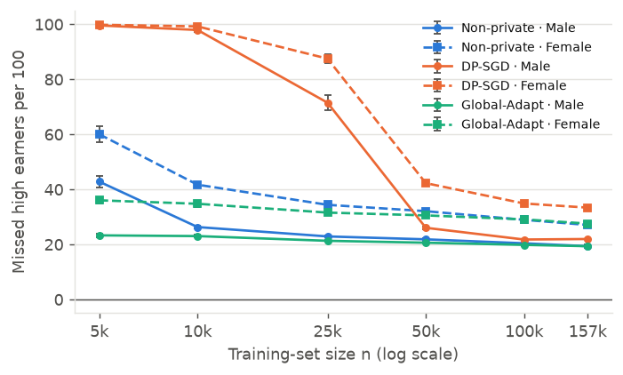
At 5k and 10k it holds almost exactly: DP-SGD misses 98–100% of high earners, and π matches the headroom to within 0.6 points.
| Men: headroom / π | Women: headroom / π | |
|---|---|---|
| 5k | 16.9 / 16.8 | 7.3 / 7.3 |
| 10k | 21.6 / 21.0 | 11.2 / 11.2 |
| Adult | 12 / 10.7 | 4 / 3.7 |
Once DP-SGD’s accuracy equals the constant’s, π equals the headroom by definition, under any baseline: 25.8 / 25.7 for men at 5k against the lr-0.2 baseline. The finding is the fallback itself.
From 25k on it breaks down.
So the large gaps arise when DP-SGD learns nothing beyond the majority answer. The group whose non-private model had learned more loses more. The ε sweep shows that clipping, not noise, drives this fallback, which fits Esipova et al. Whether clipping hurts through the update’s direction (their gradient misalignment) or its size needs the mechanism experiments.
Sanyal et al. (2022) predict that the gap grows as privacy tightens, then shrinks once everyone does badly. We vary ε from 0.5 to 8 (σ ≈ 4.1 to 0.7) at n = 25k, where the size sweep changes fastest.
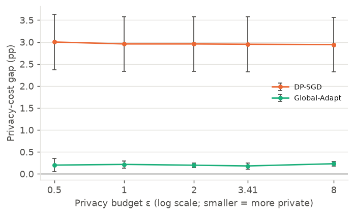
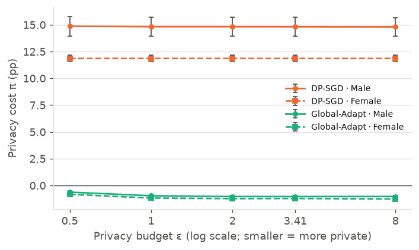
info_e = pd.concat({e: A.run_info(r) for e, r in eps_runs.items()}, names=["target ε", "method"])
gap_e = es["gap"].assign(method=es["gap"].method.map(A.METHOD_LABELS)).rename(columns={"epsilon": "target ε"})
out = gap_e.set_index(["target ε", "method"])[["mean", "se"]].round(2).join(info_e[["sigma", "epsilon"]])
out.rename(columns={"mean": "gap", "se": "SE", "sigma": "σ (solved)", "epsilon": "ε (achieved)"}).rename_axis(["target ε", "Method"])| gap | SE | σ (solved) | ε (achieved) | ||
|---|---|---|---|---|---|
| target ε | Method | ||||
| 0.50 | DP-SGD | 3.00 | 0.63 | 4.062 | 0.496 |
| Global-Adapt | 0.20 | 0.15 | 4.062 | 0.535 | |
| 1.00 | DP-SGD | 2.96 | 0.62 | 2.227 | 0.992 |
| Global-Adapt | 0.22 | 0.08 | 2.227 | 1.014 | |
| 2.00 | DP-SGD | 2.96 | 0.62 | 1.323 | 1.996 |
| Global-Adapt | 0.20 | 0.05 | 1.323 | 2.008 | |
| 3.41 | DP-SGD | 2.95 | 0.62 | 0.983 | 3.409 |
| Global-Adapt | 0.18 | 0.07 | 0.983 | 3.416 | |
| 8.00 | DP-SGD | 2.94 | 0.62 | 0.704 | 7.991 |
| Global-Adapt | 0.23 | 0.05 | 0.704 | 7.994 |
The gap does not move. DP-SGD’s gap is 2.9–3.0 at every ε, and each sex’s π changes by under 0.1, although σ varies almost 6-fold. Global-Adapt stays at about 0.2. There is no two-phase pattern in this range; much stronger privacy would eventually let the noise dominate.
Diagnostic, seed 0 only, outside the stored sweep: DP-SGD with σ = 0, which is clipping only with no privacy.
| Seed 0, ours, accuracy men / women | σ = 0 (clip only) | σ = 4.06 (ε ≈ 0.5) | σ = 20 (ε ≈ 0.16) |
|---|---|---|---|
| n = 25k | 62.1 / 67.1 | 61.8 / 67.0 | 61.5 / 66.8 |
| All of California | 77.04 / 78.23 | 77.03 / 78.22 at ε = 3.41 | – |
So nearly all of DP-SGD’s cost and gap here comes from clipping, not noise. With C = 0.5 and lr 0.01, clipped steps are small, and 20 epochs get the model only partway. The noise averages out; the clipping is systematic.
Global-Adapt’s π sits just below 0 at every ε for the same reason as at small n. Against the lr-0.2 baseline it is about +1.3 to +1.8.
This is consistent with Esipova et al., and a caution for reading the size sweep. Adult uses the same settings, so this may hold there too; we have not checked.
Every privacy cost is measured against a non-private model. Ours uses Adult’s preset, lr 0.01, which is undertrained at small n: at 5k it gets 400 steps. Global-Adapt, at lr 0.2, beats it, and that produces the negative π in the size-sweep and ε figures.
To check how much the conclusions depend on this, we also trained the non-private model at Global-Adapt’s lr 0.2, for every setting (5 seeds each), and recomputed π and the gaps against it. The lr-0.01 baseline stays primary on this page, for comparability with Adult and the paper.
CASES = {**{f"n = {n:,}": ("folktables_sex", {"n_train": n}) for n in NS}, "all CA, natural": ("folktables_sex", {}),
"all CA, balanced": ("folktables_sex", {"balance": True}), "race": ("folktables_race", {})}
pd.concat({label: A.setting_summary({k: (runner.load(ds, SOURCE, baseline_lr=lr, **kw), ds) for k, (ds, kw) in CASES.items()})
for label, lr in {"lr 0.01 (preset)": None, "lr 0.2 (matched)": 0.2}.items()}, names=["non-private baseline", "setting"])| groups | non-private acc | DP-SGD gap | Global-Adapt gap | Global-Adapt π | ||
|---|---|---|---|---|---|---|
| non-private baseline | setting | |||||
| lr 0.01 (preset) | n = 5,000 | Male / Female | 70.5 / 72.2 | 9.50 ± 0.16 | 0.59 ± 0.27 | -6.1 / -5.5 |
| n = 10,000 | Male / Female | 75.2 / 76.1 | 9.86 ± 0.37 | 0.38 ± 0.17 | -2.6 / -2.9 | |
| n = 25,000 | Male / Female | 78.0 / 79.2 | 2.95 ± 0.62 | 0.18 ± 0.07 | -1.0 / -1.2 | |
| n = 50,000 | Male / Female | 79.5 / 80.8 | 0.54 ± 0.09 | 0.08 ± 0.07 | -0.5 / -0.6 | |
| n = 100,000 | Male / Female | 80.7 / 82.0 | 0.28 ± 0.10 | 0.06 ± 0.07 | -0.1 / -0.1 | |
| all CA, natural | Male / Female | 81.1 / 82.5 | 0.14 ± 0.06 | 0.13 ± 0.12 | 0.0 / 0.1 | |
| all CA, balanced | Male / Female | 80.9 / 82.4 | 0.05 ± 0.16 | 0.08 ± 0.05 | 0.0 / 0.1 | |
| race | White / Black | 81.2 / 79.0 | 0.37 ± 0.22 | 0.13 ± 0.09 | -0.1 / 0.1 | |
| lr 0.2 (matched) | n = 5,000 | Male / Female | 79.4 / 80.3 | 10.22 ± 0.32 | 0.13 ± 0.15 | 2.7 / 2.6 |
| n = 10,000 | Male / Female | 77.7 / 78.4 | 10.00 ± 0.26 | 0.53 ± 0.33 | -0.1 / -0.7 | |
| n = 25,000 | Male / Female | 80.5 / 81.8 | 2.86 ± 0.64 | 0.09 ± 0.19 | 1.4 / 1.3 | |
| n = 50,000 | Male / Female | 80.6 / 81.6 | 0.29 ± 0.42 | 0.33 ± 0.42 | 0.5 / 0.2 | |
| n = 100,000 | Male / Female | 81.7 / 83.1 | 0.36 ± 0.18 | 0.14 ± 0.17 | 0.8 / 1.0 | |
| all CA, natural | Male / Female | 81.6 / 83.2 | 0.37 ± 0.10 | 0.36 ± 0.19 | 0.5 / 0.8 | |
| all CA, balanced | Male / Female | 80.8 / 81.7 | 0.59 ± 0.71 | 0.56 ± 0.56 | -0.1 / -0.7 | |
| race | White / Black | 82.1 / 79.8 | 0.49 ± 0.19 | 0.01 ± 0.33 | 0.9 / 0.9 |
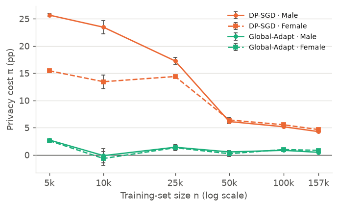
The gap conclusions hold under either baseline. Global-Adapt’s negative costs do not.
Still unresolved: DP-SGD (lr 0.01) and Global-Adapt (lr 0.2) still differ in learning rate, and the private models’ step count still grows with n.
| seeds | epsilon | delta | sigma | final_Z | source | ||
|---|---|---|---|---|---|---|---|
| method | |||||||
| CA balanced | Non-private | 5 | – | – | – | – | rerun |
| DP-SGD | 5 | 3.405 | 1e-06 | 0.701 | – | rerun | |
| Global-Adapt | 5 | 3.406 | 1e-06 | 0.701 | 14.94 | rerun | |
| CA natural ratio | Non-private | 5 | – | – | – | – | rerun |
| DP-SGD | 5 | 3.407 | 1e-06 | 0.696 | – | rerun | |
| Global-Adapt | 5 | 3.408 | 1e-06 | 0.696 | 14.33 | rerun | |
| CA race | Non-private | 5 | – | – | – | – | rerun |
| DP-SGD | 5 | 3.403 | 1e-06 | 0.738 | – | rerun | |
| Global-Adapt | 5 | 3.404 | 1e-06 | 0.738 | 12.59 | rerun |
All numbers are ours, at ε = 3.41.